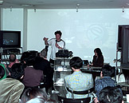

- reality -
|  |
Pictures of virtual reality fossils If you don't want to use a VRML browser, but are still interested in seeing the virtual reality fossils, here are some pictures of them. . Virtual reality at the NHM In 1997 The Natural History Museum was a partner in an exciting virtual reality project. The Museum's part in the project was to develop 'The virtual Endeavour experiment', an exhibition in virtual reality. One of the technologies being used in the production of the virtual exhibition allowed real objects to be converted into three dimensional data sets. |
 |
org is the one-stop online resource for the Visual Simulation community. It is a non-commercial, non-profit venture sponsored by professionals in the industry. - Build online your Virtual Reality WWW Gateway with Free Hosting. VR includes Bookshop, Space Station, Educational Games, Mazes. Cybertown - The Sci-fi Community of the Future - A virtual world based around Blaxxun's community software. |
|
org is the one-stop online resource for the Visual Simulation community. It is a non-commercial, non-profit venture sponsored by professionals in the industry. com Worldwide Supplier of Virtual Reality Hardware and Services . org News, information, resources, and discussions on all topics related to virtual reality technology and its uses. html Includes frequently asked questions and related publications. |
Computer science offers simple agents as a solution for information selection and navigation in virtuality. The interesting question is if these placeholders have the potential of fabricating their own phenomena since their movement in networks can hardly be controlled, their effectiveness in time cannot be limited and their number can be continuously raised by copies. Knowbotic Research themselves emphasize the aspect of juxtaposing different levels of what is regarded as reality. Such breaks have to be deepened, especially given an 'internet' that presents itself as a slick and perfect order for the exercise of prescribed individual, sequentially determined steps. We regard the harmonic and peaceful coexistence and community of various so-called interest groups on the internet and the world wide web as an unfortunate state which is based on the obsolete ideology of a rather abstract individualism.
A good reality site: http://www.alltheweb.com/cgi-bin/search?type=all&query=%22virtual%2breality%22